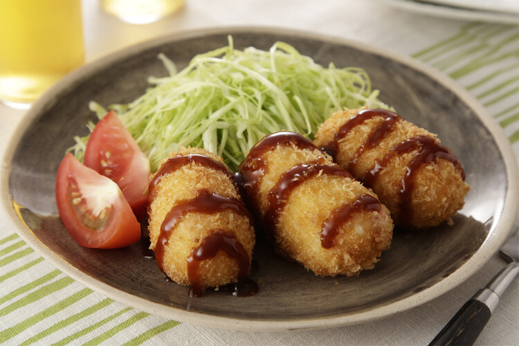

Kero's Vegan Korokke

Description
This is my own vegan spin on Japanese Korokke! I got the original recipe from Christie Lai's Easy & Simple Korokke Recipe
and made it my own! It took some trial and error to get the battering process right, but I am happy to say that I was very successfull
in getting them to stay together! They also make for perfect meal preps and can easily be frozen, which I will go more in depth in the recipe notes.
I hope that everyone enjoys these as much as I have!!
召上がれ!
Serves: 4-6
Prep time: 30 min
Cook Time: 20 min
Ingredients
For the Potato Mixture:
- 2 pounds of medium russet potatoes, washed and halved
- 3 tablespoons of vegan butter
- 2/3 cup of non-dairy milk
- 1 teaspoon of salt
- 1 small yellow onion, small diced
- 1 small-medium carrot, small diced
- 1 clove of garlic, minced
- 250g vegan minced meat*
(I like using the pre-coooked Veganes Mühlen Hack from Ruegenwalder, but you can
make your own with some beyond or impossible ground and cook it up to make little minced pieces)
For the Batter/Coating:
- 1/2 cup of non-dairy milk
- 1/3 cup of cornstarch (potato starch, tapioca starch, or flour also works!)
- 1/2 cup of fine panko breadcrumbs
For the Dipping Sauce:
- 2 tablespoons of ketchup
- 1 tablespoon of vegan yakitori sauce or another vegan sweet barbecue sauce (I recommend the Kikkoman brand)
- 5 teaspoons of vegan Worcestershire sauce
- 2 1/2 teaspoons of granulated sugar
Steps
- Wash your potatoes and halve or quarter them, then place in a pot with cold water and bring to a boil.
Once the water is boiling, set a timer and boil the potatoes loosely covered for 25 minutes.
- Meanwhile, chop and fry your onions and carrots in 1-2 tablespoons of oil, adding in your garlic towards the end until everything is soft and caramelized.
Place into a mixing bowl, and add your cooked vegan mince. Season with salt to taste.
- Once the potatoes are cooked, drain and mash them, incorporating the butter, and then slowly adding your non-dairy milk to the potato mash until the consistency is malleable.
(You want a texture that is not too dry, and also not too soft. They will be done when you can pick up a chunk with a spoon or fork, and they do not crumble or sink.)
- Combine your veggie/mince mixture into the mashed potatoes and then divide the batter into 15-20 equal portions.
Roll them into little oval shaped balls and place them into the fridge for 15 minutes. (Do not skip this step or you will have a difficult time coating them)
- In one bowl add your corn starch. In a second bowl place your non-dairy milk of choice. And lastly, in a third bowl, add your panko breadcrumbs.
- Coat each ball first in your non-dairy milk, and then dip into your cornstarch mixture until evenly coated.
Then dip back into the non-dairy milk and lastly, coat with your panko breadcrumbs.
- Heat 1-2 cups of oil over medium heat in a large pan. To test if it's ready, place a wooden chopstick and look for bubbles.
If you spot bubbles, it's time to deep fry! (If you do not have wooden chopsticks, test by throwing one of the panko crumbs into the oil, if it forms a lot of bubbles, it's ready.)
- Deep fry for 1-2 minutes on each side until crispy and golden brown and place on a towel or wire rack to remove excess oil.
- Once your frying is completed, combine all the sauce ingredients together in a small bowl using a whisk.
- Enjoy your fresh korokke with your tasty sauce!
Notes
- To freeze the korokke for meal prepping, place the freshly battered and coated korokke on a sheet of parchment paper.
Layer the parchment paper as needed and place into a container and into the freezer. From here you can pick back up at step 7 without any modifications.
- If you would like to air-fry these instead of deep frying, pre-heat your air fryer at 200 C (400 F), and cook for 20 minutes, flipping halfway.
If you choose to prep and freeze your korokke, you can also air-fry them without any modifications.